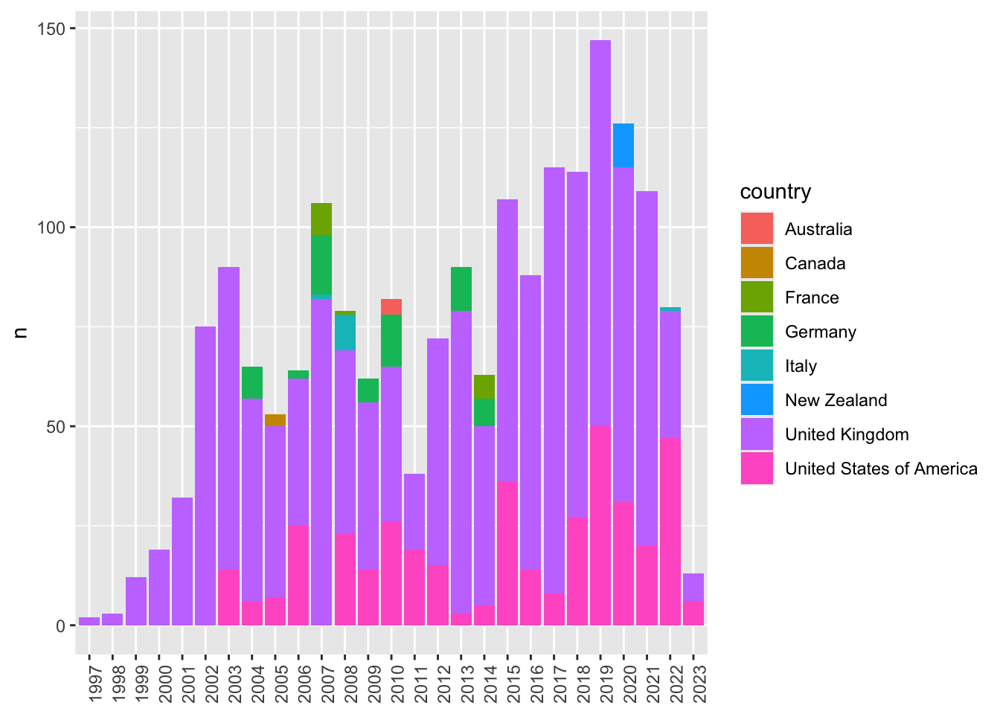
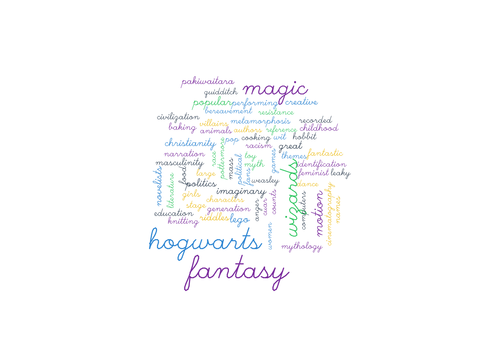

homer <- c("в", "мысли", "ему", "то", "вложила", "богиня", "державная", "гера")4 Циклы, условия, функции
В этом уроке мы познакомимся с итерационными конструкциями и функционалами, т.е. такими функциями, которые принимают в качестве аргумента другую функцию. Они нужны для того, чтобы можно было что-то сделать много раз: например, прочитать сразу 100 файлов из директории, построить и сохранить одной командой несколько графиков или сделать множество случайных выборок из большого текстового корпуса.
Общее правило таково: если вы скопировали кусок кода больше трех раз, то самое время задуматься об итерации. Это позволит избежать ошибок при копировании и сделает код более легким и читаемым.
4.1 Циклы и их аналоги
Хорошая новость: многие функции в R уже векторизованы, и если необходимо применить функцию к каждому элементу вектора, в большинстве случаев достаточно просто вызвать функцию. Это называется векторизация.
Например, у нас есть символьный вектор, и мы хотим узнать количество символов в каждом слове.
Для каждого компонента вектора необходимо выполнить одну итерацию цикла, в нашем случае – применить функцию nchar(). В некоторых языках программирования это делается как-то так:
for(i in homer) print(nchar(i))[1] 1
[1] 5
[1] 3
[1] 2
[1] 7
[1] 6
[1] 9
[1] 4Мы написали цикл for, который считает количество букв для каждого слова в векторе. Как видно, все сработало. Но в R это избыточно, потому что nchar() уже векторизована:
nchar(homer)[1] 1 5 3 2 7 6 9 4Это относится не только ко многим встроенным функциям R, но и к даже к операторам. x + 4 в действительности представляет собой +(x, 4):
x <- c(1.2, 2.51, 3.8)
`+`(x, 4) [1] 5.20 6.51 7.80Ключевую роль здесь играет переработка данных, о которой мы говорили в первом уроке: короткий вектор повторяется до тех пор, пока его длина не сравняется с длиной более длинного вектора. Как-то так:
\[ \left( \begin{array}{c} 1.2 \\ 2.51 \\ 3.8 \end{array} \right) + \left( \begin{array}{c} 4 \\ 4 \\ 4 \end{array} \right) \]
Лишний цикл может замедлить вычисления. Проверим. Дан вектор x <- c(3, 5, 7, 13). Необходимо возвести в квадрат каждое число, а из результата вычесть 100. Выполним двумя способами.
library(tictoc)
x <- c(2, 3, 5, 7, 11, 13)
# способ первый
tic()
for (i in x) print(i^2 - 100)[1] -96
[1] -91
[1] -75
[1] -51
[1] 21
[1] 69toc()0.002 sec elapsed# способ второй
tic()
x^2 - 100[1] -96 -91 -75 -51 21 69toc()0 sec elapsedОдин из главных принципов программирования на R гласит, что следует обходиться без циклов, а если это невозможно, то циклы должны быть простыми.
— Нормат Мэтлофф
Для работы со списками циклы тоже чаще всего избыточны. Снова воспользуемся списком печенек из коллекции rcorpora.
library(rcorpora)
my_list <- corpora("foods/breads_and_pastries")
paste("Длина списка:", length(my_list))[1] "Длина списка: 3"names(my_list)[1] "description" "breads" "pastries" Как узнать длину каждого вложенного в список вектора? Попробуем цикл (снова заметим время):
tic()
for (i in 1:length(my_list)) print(length(my_list[[i]]))[1] 1
[1] 35
[1] 20toc()0.003 sec elapsedНо в базовом R для таких случаев существуют функционалы lapply() и sapply(). Они принимают на входе список и функцию и применяют функцию к каждому элементу списка. Получается быстрее:
tic()
lapply(my_list, length)$description
[1] 1
$breads
[1] 35
$pastries
[1] 20toc()0.001 sec elapsedФункция sapply() упростит результат до вектора (s означает simplify):
tic()
sapply(my_list, length)description breads pastries
1 35 20 toc()0.001 sec elapsedЕсли в виде списка хранится корпус, то так можно сделать, например, случайную выборку. Заметьте, как переданы аргументы функции sample().
lapply(my_list[2:3], sample, 5, replace = TRUE)$breads
[1] "focaccia" "hardtack" "casalinga" "baguette" "hardtack"
$pastries
[1] "stollen" "toaster strudel" "bomboloni" "pastel de nata"
[5] "cronut" Может быть, с датафреймами будут полезны циклы? Например, так.
df <- data.frame(author=c("Joe","Jane"), year=c(1801,1901), reprints=c(TRUE,FALSE))
dftic()
for (i in seq_along(df)) {
print(class(df[,i]))
}[1] "character"
[1] "numeric"
[1] "logical"toc()0.003 sec elapsedНо и здесь можно ускориться. Второй аргумент apply означает, что мы работаем со столбцами (1 - строки).
tic()
apply(df, 2, class) author year reprints
"character" "character" "character" toc()0.001 sec elapsedЕсть еще vapply(), tapply() и mapply(), но и про них мы не будем много говорить, потому что все их с успехом заменяет семейство map_() из пакета purrr в tidyverse.
Тем не менее, перед освоением семейства map_() стоит потренироваться работать с обычными циклами, особенно если вам не приходилось иметь с ними дела (например, на Python). Несмотря на все недостатки, цикл for интуитивно понятен и часто проще начинать именно с него. Поэтому, прежде чем двинуться дальше, сделаем несколько упражнений из (Wickham и Grolemund 2016, 316).
# стоит заглянуть в документацию к функции
out <- ""
for (x in letters) {
out <- stringr::str_c(out, x)
}
# ответ - всего пять символов...
x <- sample(100)
sd <- 0
for (i in seq_along(x)) {
sd <- sd + (x[i] - mean(x)) ^ 2
}
sd <- sqrt(sd / (length(x) - 1))
# надо понять, что тут происходит
x <- runif(100)
out <- vector("numeric", length(x))
out[1] <- x[1]
for (i in 2:length(x)) {
out[i] <- out[i - 1] + x[i]
}4.2 Условия
Иногда необходимо ограничить выполнение функции неким условием. Короткие условия можно писать в одну строку без фигурных скобок.
y <- "Эйяфьятлайокудль"
if(nchar(y) > 10) print("много букв")[1] "много букв"Более сложные и множественные условия требуют фигурных скобок. Можно сравнить это с условным периодом: протасис (всегда либо TRUE, либо FALSE) в круглых скобках, аподосис в фигурных.
if (nchar(y) > 10) {
print("много букв")
} else if (nchar(y) < 5) {
print("мало букв")
} else {
print("норм букв")
}[1] "много букв"Также в R можно использовать специальную функцию:
ifelse(nchar(y) > 10, "много букв", "мало букв")[1] "много букв"Прописывая условие, не забывайте, что применение булева оператора к вектору возвращает логический вектор:
x <- c(1:10)
x >= 5 [1] FALSE FALSE FALSE FALSE TRUE TRUE TRUE TRUE TRUE TRUEТакое условие вернет ошибку.
if (x >= 5) print("все сломалось")Error in if (x >= 5) print("все сломалось"): the condition has length > 1Можно скорректировать код так:
if (any(x >= 5)) print("все сработало")[1] "все сработало"По той же причине внутри условия не надо использовать логические операторы | (“или”) или & (“и”), потому что они векторизованы:
x < 3 | x > 7 [1] TRUE TRUE FALSE FALSE FALSE FALSE FALSE TRUE TRUE TRUE4.3 Функции
Функция и код – не одно и то же. Чтобы стать функцией, кусок кода должен получить имя. Но зачем давать имя коду, который и так работает?
Вот три причины, которые приводит Хадли Уикхем:
- у функции есть выразительное имя, которое облегчает понимание кода;
- при изменении требований необходимо обновлять код только в одном месте, а не во многих;
- меньше вероятность случайных ошибок при копировании (например, обновление имени переменной в одном месте, но не в другом)
Writing good functions is a lifetime journey.
— Hadley Wickham
Машине все равно, как вы назовете функцию, но тем, кто будет читать код, не все равно. Имена должны быть информативы (поэтому функция f() – плохая идея). Также не стоит переписывать уже существующие в R имена!
Далее следует определить формальные аргументы и, при желании, значения по умолчанию. Тело функции пишется в фигурных скобках. В конце кода функции располагается команда return(); если ее нет, то функция возвращает последнее вычисленное значение (см. здесь о том, когда что предпочесть).
Написание функций – навык, который можно бесконечно совершенствовать. Начать проще всего с обычного кода. Убедившись, что он работает как надо, вы можете упаковать его в функцию.
Например, нам нужна функция, которая ищет совпадения в двух векторах и возвращает совпавшие элементы. Сначала решим задачу для двух векторов.
line1 <- c("гнев", "богиня", "воспой")
line2 <- c("в", "мысли", "ему", "то", "вложила", "богиня", "державная", "гера")
idx <- which(line2 %in% line1) # 2
line2[idx][1] "богиня"Теперь заменяем фактические переменные на формальные.
common_words <- function(x, y){
idx <- which(x %in% y)
x[idx]
}И применяем к новым данным.
line3 <- c("лишь", "явилась", "заря", "розоперстая", "вестница", "утра")
line4 <- c("вестница", "утра", "заря", "на", "великий", "олимп", "восходила")
common_words(line4, line3)[1] "вестница" "утра" "заря" Напишем функцию, которая будет центрировать данные, то есть вычитать среднее из каждого значения (забудем на время, что это уже делает базовая scale()):
center <- function(x){
n = x - mean(x)
return(n)
}
x <- c(5, 10, 15)
center(x) [1] -5 0 5Внутри нашей функции есть переменная n, которую не видно в глобальном окружении. Это локальная переменная. Область ее видимости – тело функции. Когда функция возвращает управление, переменная исчезает. Обратное неверно: глобальные переменные доступны в теле функции.
Функция может принимать произвольное число аргументов. Доработаем наш код:
center <- function(x, na.rm = F){
if(na.rm) { x <- x[!is.na(x)]} # добавим условие
x - mean(x) # на этот раз без return()
}
x <- c(5, 10, NA)
center(x)[1] NA NA NAЧто произошло? Почему следующий код выдает другой результат?
center(x, na.rm = T)[1] -2.5 2.5Вычисления в R ленивы, то есть они откладываются до тех пор, пока не понадобится результат. Если вы зададите аргумент, который не нужен в теле функции, ошибки не будет.
center <- function(x, na.rm = F, what_is_your_name){
if(na.rm) { x <- x[!is.na(x)]} # добавим условие
x - mean(x) # на этот раз без return()
}
center(x, na.rm = T)[1] -2.5 2.5center(x, na.rm = T, what_is_your_name = "Locusclassicus")[1] -2.5 2.5Часто имеет смысл добавить условие остановки или сообщение, которое будет распечатано в консоль при выполнении.
center <- function(x){
if (length(x) == 1) {stop("Отстань, старушка, я в печали.")}
x - mean(x) # на этот раз без return()
}
x <- 10
center(x) # вернет ошибку4.4 Purrr
По-настоящему мощный инструмент для итераций – это пакет purrr из семейства tidyverse. Разработчики предупреждают, что потребуется время, чтобы овладеть этим инструментом (Wickham и Grolemund 2016).
You should never feel bad about using a loop instead of a map function. The map functions are a step up a tower of abstraction, and it can take a long time to get your head around how they work.
— Hadley Wickham & Garrett Grolemund
В семействе функций map_ из этого пакета всего 23 вариации. Вот основные из них:
map()map_lgl()map_int()map_dbl()map_chr()
Все они принимают на входе данные и функцию (или формулу), которую следует к ним применить, и возвращают результат в том виде, который указан после подчеркивания. Просто map() вернет список, а map_int() – целочисленный вектор, и т.д.
Воспользуемся возможностями purrr, чтобы исследовать датасет starwars из пакета dplyr. Для начала узнаем число отсутствующих значений в каждом столбце. Косая черта (\) указывает на то, что мы используем анонимную функцию
library(tidyverse)
starwars <- starwars
map_int(starwars, \(x) sum(is.na(x))) name height mass hair_color skin_color eye_color birth_year
0 6 28 5 0 0 44
sex gender homeworld species films vehicles starships
4 4 10 4 0 0 0 Обратите внимание, что map_int, как и map_dbl возвращает именованный вектор. Чтобы избавиться от имен, можно использовать unname():
map_chr(starwars, class) |>
unname() [1] "character" "integer" "numeric" "character" "character" "character"
[7] "numeric" "character" "character" "character" "character" "list"
[13] "list" "list" Используйте map_dbl и n_distinct, чтобы узнать число уникальных наблюдений в каждом столбце.
Если функция принимает дополнительные аргументы, их можно задать после названия функции. В таком случае для каждого вызова функции будет использовано это значение аргумента. В примере ниже это аргумент na.rm.
starwars |>
select(mass, height) |>
map(mean, na.rm = TRUE)$mass
[1] 97.31186
$height
[1] 174.6049При вызове map_df есть дополнительная возможность сохранить названия столбцов, используя аргумент .id:
starwars |>
map_df(~data.frame(unique_values = n_distinct(.x),
col_class = class(.x)),
.id = "variable"
)Функции map можно передать пользовательскую функцию. Для примера создадим функцию describe_vec(), которая возвращает строку с длиной и классом вектора, и применим ее к хлебо-булочному списку из примеров выше.
# пользовательская функция
describe_vec <- function(vec){
l = paste("Длина вектора: ", length(vec))
c = paste("Класс вектора: ", class(vec))
result = paste(l, c, sep = " | ")
return(result)
}
map_chr(my_list, describe_vec) |>
unname()[1] "Длина вектора: 1 | Класс вектора: character"
[2] "Длина вектора: 35 | Класс вектора: character"
[3] "Длина вектора: 20 | Класс вектора: character"Кроме того, мы можем передать map анонимную функцию (вместо function можно поставить \):
map_chr(my_list,
function(x) paste("Длина вектора: ", length(x))
) description breads pastries
"Длина вектора: 1" "Длина вектора: 35" "Длина вектора: 20" Если необходимо несколько раз вызывать одну и ту же функцию с двумя аргументами, используется функция map2(). Аргументы, которые меняются при каждом вызове, пишутся до функции; аргументы, которые остаются неизменны, – после.
mean = list(5, 10, -3)
sd = list(1, 5, 50)
map2(mean, sd, rnorm, n = 5)[[1]]
[1] 6.159704 5.580393 5.574638 2.999518 4.423704
[[2]]
[1] 14.513532 9.207845 14.755940 4.109206 8.326164
[[3]]
[1] -8.0193665 -3.9381224 -22.1025663 40.6240733 0.3250151
map2()_Это можно обобщить следующим образом (источник):

Можно было бы предположить, что должны быть и map3(), map4() и т.д., но во всех случаеях, когда у функции больше двух аргументов, используется pmap().
Несколько вопросов для самопроверки.
4.5 Чтение файлов с purrr
Вы уже поняли, что благодаря циклам можно прочитать сразу несколько файлов. Та же задача решается и при помощи map. Мы потренируемся на датасете, который в 2023 г. был доступен на сайте Британской библиотеки (https://www.bl.uk/), но потом оттуда исчез. Однако у нас сохранилась копия.
Датасет представляет собой набор файлов .csv, содержащих метаданные о ресурсах, связанных с Гарри Поттером, из коллекций Британской библиотеки. Первоначально он был выпущен к 20-летию публикации книги «Гарри Поттер и философский камень» 26 июня 2017 года и с тех пор ежегодно обновлялся. Всего в датасете пять файлов, каждый из которых содержит разное представление данных.
Скачаем архив.
my_url <- "https://github.com/locusclassicus/text_analysis_2024/raw/main/files/HP.zip"
download.file(url = my_url, destfile = "HP.zip")После этого переходим в директорию с архивом и распаковываем его.
unzip("HP.zip")# сохраните список всех файлов с расширением .csv,
# используя подходящую функцию из base R
# ваш код здесь
# my_files <-
# напишите цикл, который:
# 1) прочитает все файлы из my_files, используя для этого функцию read_csv() из пакета readr
# (аргумент show_col_types установите на FALSE);
# 2) для каждого датасета выяснит количество рядов _без_ NA в столбце BNB Number;
# 3) разделит число таких рядов на общее число рядов;
# 4) вернет таблицу c четырьми столбцами:
# - название файла (id),
# - число рядов (total),
# - число рядов без NA (complete),
# - доля полных рядов (ratio)
my_df <- data.frame(id = my_files,
total = rep(0, length(my_files)),
complete = rep(0, length(my_files)),
ratio = rep(0, length(my_files)))
for (i in 1:length(my_files)) {
# ваш код здесь
}Узнаем имена файлов в директории и прочитаем их все одним вызовом функции.
# чтение файлов
library(readr)
files <- list.files("../files/HP", pattern = ".csv", full.names = TRUE)
HP <- map(files, read_csv, col_types = cols())Объект HP – это список. В нем пять элементов, так как на входе у нас было пять файлов. Для удобства назначим имена элементам списка. Пока можно не вникать, что здесь происходит – регулярные выражения мы рассмотрим в одном из следующих уроков.
library(stringr)
names(HP) <- str_extract(files, "\\w+(?=.csv)")
names(HP)[1] "classification" "names" "records" "titles"
[5] "topics" Начнем с простого: при помощи map можно извлечь столбцы (по имени) или ряды (по условию) из всех пяти таблиц. Прежде чем выполнить код ниже, подумайте, как будет выглядеть результат.
# извлечь столбцы
map(HP, select, `BNB number`)
# извлечь ряды
map(HP, filter, !(is.na(`BNB number`)))Что, если мы не знаем заранее, какие столбцы есть во всех пяти таблицах, и хотим это выяснить? Для этого подойдет функция reduce() из того же purrr. Она принимает на входе вектор (или список) и функцию и применяет функцию последовательно к каждой паре значений.

Воспользуемся этим, чтобы найти общие для всех таблиц имена столбцов.
map(HP, colnames) |>
reduce(intersect) [1] "Dewey classification" "BL record ID"
[3] "Type of resource" "Content type"
[5] "Material type" "BNB number"
[7] "ISBN" "ISSN"
[9] "Name" "Dates associated with name"
[11] "Type of name" "Role"
[13] "Title" "Series title"
[15] "Number within series" "Country of publication"
[17] "Place of publication" "Publisher"
[19] "Date of publication" "Edition"
[21] "Physical description" "BL shelfmark"
[23] "Genre" "Languages"
[25] "Notes" Еще одна неочевидная возможность функции reduce - объединение нескольких таблиц в одну одним вызовом. Например, так:
HP_joined <- HP |>
reduce(left_join)Теперь можно почистить данные и построить несколько разведывательных графиков.
library(ggplot2)
library(tidyr)
data_sum <- HP_joined |>
separate(`Date of publication`, into = c("year", NA)) |>
separate(`Country of publication`, into = c("country", NA), sep = ";") |>
mutate(country = str_squish(country)) |>
mutate(country =
case_when(country == "England" ~ "United Kingdom",
country == "Scotland" ~ "United Kingdom",
TRUE ~ country)) |>
group_by(year, country) |>
summarise(n = n()) |>
filter(!is.na(year)) |>
filter(!is.na(country))
# график
data_sum |>
ggplot(aes(year, n, fill = country)) +
geom_col() +
xlab(NULL) +
theme(axis.text.x = element_text(angle = 90))
В качестве небольшого бонуса к этому уроку построим облако слов. Вектор слов возьмем из столбца Topic.
library(tidyr)
data_topics <- HP_joined |>
filter(!is.na(Topics)) |>
separate(Topics, into = c("topic", NA)) |>
mutate(topic = tolower(topic)) |>
group_by(topic) |>
summarise(n = n()) |>
filter(!topic %in% c("harry", "rowling", "potter", "children", "literary"))
pal <- c("#f1c40f", "#34495e",
"#8e44ad", "#3498db",
"#2ecc71")
library(wordcloud)Loading required package: RColorBrewerpar(mar = c(1, 1, 1, 1))
wordcloud(data_topics$topic,
data_topics$n,
min.freq = 3,
#max.words = 50,
scale = c(3, 0.8),
colors = pal,
random.color = T,
rot.per = .2,
vfont=c("script","plain")
)
Интерактивное облако слов можно построить с использованием пакета wordcloud2. Сделаем облако в форме шляпы волшебника!
# devtools::install_github("lchiffon/wordcloud2")
library(wordcloud2)
wordcloud2(data_topics,
figPath = "./images/hat.png",
size = 1.5,
color="random-light",
fontWeight = "normal",
backgroundColor="black"
)
# постройте облако слов для "Алисы в стране чудес"
library(languageR)
library(dplyr)
library(tidytext)
# вектор с "Алисой"
alice <- tolower(alice)
# частотности для слов
freq <- as_tibble(table(alice)) |>
rename(word = alice)
# удалить стоп-слова
freq_tidy <- freq |>
anti_join(stop_words)
# возможно, вы захотите произвести и другие преобразования
# облако можно строить в любой библиотеке